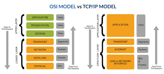

TCP/IP (Transmission Control Protocol/Internet Protocol) is a suite of communication protocols used to interconnected devices on the internet.
These protocols provide the foundation for data communication on the internet, ensuring that data is transmitted reliably and efficiently between devices.
TCP is responsible for ensuring that data is delivered accurately and in the correct order, while IP handles the addressing and routing of data packets across the network.